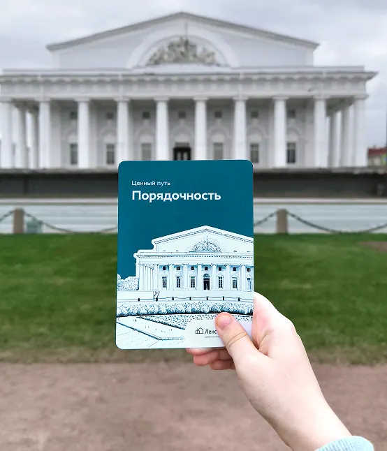
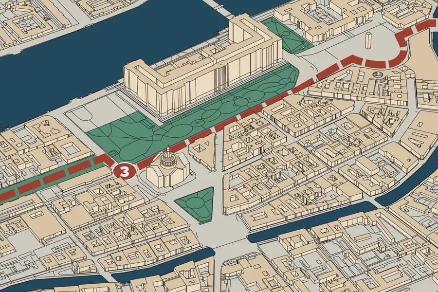

«Ценный путь»
Задача
Помочь сотрудникам Ленстройтреста обсудить корпоративные ценности на ситуациях из рабочей практики.
Решение
Команда разработала настольную игру с картой Петербурга и карточками. Я участвовала в разработке визуальной концепции карт и подготовке материалов к печати.

Рабочие ситуации на карте Петербурга
В контексте игры
TSQ Consulting разработала игру, чтобы сотрудники могли разобрать корпоративные ценности на реальных ситуациях. Карта Петербурга, здания-фишки и карточки превращают разговор о ценностях в маршрут по знакомому городу.


Своё здание для каждой ценности
Мой вклад
Команда рассматривала разные подходы к иллюстрациям. В итоге взяли язык архитектурного чертежа и реальные здания Петербурга. Я участвовала в разработке визуальной концепции карт и подготовке игровых материалов к печати.




Петербург в стилистике генплана
Поле
Команда взяла 3D-модель реального Петербурга. Сетку доработала в SketchUp, а ключевые детали дорисовала в Photoshop. Из двух направлений заказчик выбрал приглушённую палитру и подачу в духе генплана.


Что входит в комплект
Комплект
Команда подготовила поле, колоды, мануал ведущего и памятки для участников. Керамические здания-фишки изготовила мастерская «Легко-Легко». На обложку коробки вынесли карту, а на боковые стороны — иллюстрации ценностей.


Игра для адаптации сотрудников
Результат
TSQ Consulting передала заказчику комплект и обучила внутренних ведущих. О рабочем процессе и механике игры есть кейс команды TSQ Consulting ↗.